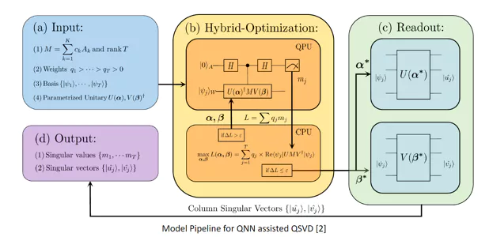

ABOUT ME
Hi! My name is SOMSHUBHRA ROY , and I am an aspiring Machine Learning Engineer based in Raleigh, North Carolina. I am currently pursuing my Master of Science in Computer Engineering from North Carolina State University , where I am specializing in Advanced Machine Learning, Neural Networks, Data Science, and several other cutting-edge fields. Before this, I earned my Bachelor of Technology in Electrical Engineering from the Institute of Engineering & Management in Kolkata, India. My research interests lie in the juncture of Computer Vision and Generative Models.But there's more to me than code and algorithms - I'm also a math enthusiast with a creative soul, finding joy in art, dancing to life's rhythms, and crafting melodie s on the piano. Let's connect and explore the boundless possibilities of technology together!
Check out my projects on GitHub or connect with me on LinkedIn .
Experience
Currently I am interning at SKYLARK LABS as a Deep Learning Intern where I work on cutting-edge self-learning computer vision models for drones.Before this, my professional journey has included a stint as a Machine Learning Engineer at the NATIONAL INFORMATICS CENTRE in Kolkata, where I led the development and deployment of facial recognition systems and played a pivotal role in research and development of Explainable and Interpretable AI-based solutions for Education and Healthcare. I also have had the opportunity to work as a Systems Engineer at INFOSYS in Mysore, India, where I honed my skills in Python, SQL, Angular7, and .NET Development.
I am proficient in a wide array of programming languages including Python, MATLAB, C#, C, C++, TypeScript, SAS and Java. My expertise extends to libraries such as TensorFlow, Keras, PyTorch, OpenCV, and Scikit-Learn, and I am adept at working with databases and operating systems like MySQL, MS-SQL, Linux, and Windows.
PROJECTS


Wavelet Face Anti Spoofing
Variational neural
image manipulation
Density estimation
using Affine coupling
based Normalizing Flows
Variational Quantum
Singular Value Decomposition
Attention based Self-Distillation
for Pruned Networks Spoofing
Wavelet-Kernel Induced ResNet
for automated detection of
neurological disorders
from EEG signals